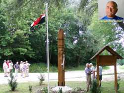
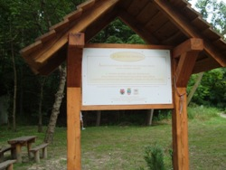

|
|
|
Die
Benediktinerabtei
von Pannonhalma ist Weltkulturerbe der Unesco und ist unbedingt
einen Ausflug wert! |
 |
|
|
Schutzheiliger der Abtei ist
der Bischof von Tours, der Heilige Martin, der unweit des Klosters
geboren sein soll. Der steile Klosterberg von Pannonhalma wird
daher auf Deutsch Martinsberg genant.
Die Abtei kann im Rahmen von Führungen besichtigt werden, die
Kirche ist zu Messfeiern öffentlich zugänglich. Eines der
traditionell populären Feste ist das Erntedankfest zum Martinstag
am 11. November. |
|
|
Ursprünglich als Wehrkirche
erbaut, sind die Festungsmauer der Abtei auch heute noch gut
erhalten und oben auf einer Bergkuppe aus der Ferne gut
sichtbar. Gegründet wurde sie vom Árpádenfürst Géza, dem Vater
König Stephans I., der dem Kloster in der Stiftungsurkunde von
1001 weitreichende Privilegien gewährte. Von den ursprünglichen
romanischen Gebäuden, die selbst dem Tatarensturm von 1242
widerstanden, ist heute nichts mehr zu sehen. Die ältesten Teile
der heute weitgehend barock und klassizistisch geprägten Anlage
sind die Krypta und der Kreuzgang aus der Gotik des 14.
Jahrhunderts. Bei der letzten Renovierung vor wenigen Jahren
wurden wertvolle Fresken in der Abteikirche und im Kreuzgang
freigelegt. |
Die drei Schiffe
der mächtigen Kirche sind durch Arkadengänge verbunden, das
Hauptschiff hat Gewölbe mit sechs Kuppeln, die Seitenschiffe sind
mit gotischen Kreuzgewölben versehen, die sich auch im
angrenzenden Kreuzgang wiederfinden, den man durch die Porta
Speciosa, das Prunkportal aus rotem Marmor, erreicht. Sehenswert
sind die Säulen der gotischen Unterkirche mit ihren in Stein
gehauenen lebensnahen Pflanzen-, Tier- und Menschendarstellung.
|
Zu den berühmtesten
Teilen der Abtei zählt die Bibliothek, die in einem der schönsten
klassizistischen Innenräume Ungarns untergebracht ist. Mit über
250.000 Bänden, darunter wertvolle Handschriften und alte Drucke,
ist sie eine der größten Benediktinerbibliotheken der Welt. Die
kunstvollen Regale stammen von einem Tischler aus Pannonhalma, die
Figuren und Bilder der Galerie zeigen die Welt des Wissens und
Schaffens. Sehenswert ist auch das Refektorium (Speisesaal der
Mönche) mit herrlichen Stuckarbeiten.
|
Bis heute ist die über tausend
Jahre alte Abtei ein lebendiges Zentrum des Glaubens, der Bildung
und der Landwirtschaft. So beherbergt sie eines der angesehensten
Knabengymnasien Ungarns, und die Brüder erzeugen neben Wein,
Liköre auch Lavendelöl und betreiben im Arboretum und im Garten
eine der größten Heilkräuterzüchtungen des Landes. Alle Produkte
werden nach bilogischen Gesichtspunkten hergestellt, so auch
Duftseifen und pralinengefüllte Schokoladen.
|
Ein wichtiger Wirtschaftsfaktor der Abtei ist der Weinbau schon
seit rd. 1.000 Jahren. Pannonhalma ist Namensgeber dieser
Weinbaurgion.
mehr --->
Waldwirtschaft und Jagd sind weitere wichtige
Wirtschaftsfaktoren in der Umgebung.
|
Ausflugsziele aus Pannonhalma:
Eine Auskunft über die Gegend
findet man
Es gibt viele Wander-, Rad- und
Reitwege in der Gegend, eine Beschreibung der einzelnen Routen
fanden wir leider nur auf Ungarisch
|
|
 |
Die leicht hügelige
Waldlandschaft verleitet zu großen Wanderungen in alle Richtungen
zu Fuß, auf Rad oder Ross.
Unterwegs entlang
des Radweges "Pannon" trifft man auf den Árpád-Brunnen an einer
legendären Stelle. |
 |
| |
| |
| |
|
Ungarn-Tourist Team

|
| |
| |
|